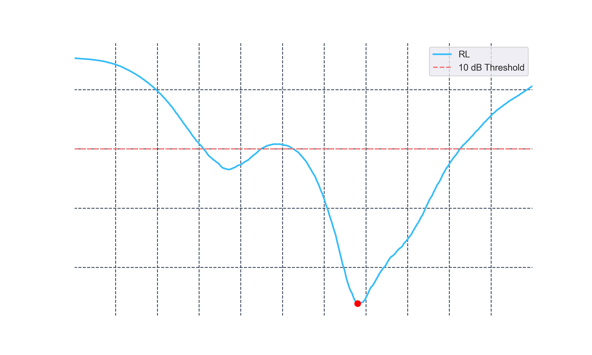
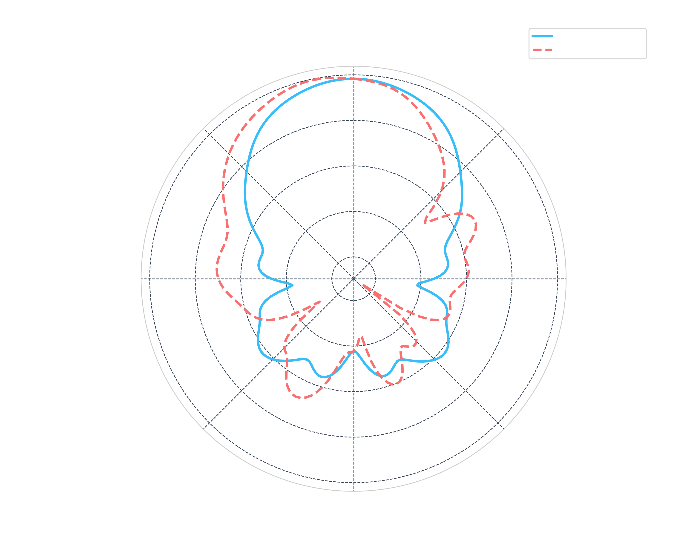

A deep dive into $S_{11}$ parameters and impedance matching for automotive radar bands.
In RF engineering, the Return Loss (RL) represents how much power is reflected back to the source due to impedance mismatch. For automotive radar (76-81 GHz), we look for a "dip" below the -10dB threshold, indicating that 90% of the power is successfully delivered to the antenna.
The goal is to match the antenna impedance to the 50Ω feed line. Our analysis confirms a perfect match at 76.8 GHz.
The usable bandwidth is defined where RL > 10dB. This antenna covers the primary 77 GHz long-range radar (LRR) band.

Figure 1: Return Loss vs. Frequency. The red marker indicates the resonant frequency point.
Using Pandas and Matplotlib, the raw sensor data (in Hz) is processed, converted to GHz, and analyzed for local minima:
# Finding the resonant frequency
max_rl_value = df['return_loss'].min()
freq_at_res = df.loc[df['return_loss'].idxmin(), 'freq']
print(f"Resonance detected at: {freq_at_res} GHz")
Beyond frequency response, we must characterize the antenna's spatial distribution. This analysis compares the normalized gain across the E-plane ($\phi=0^\circ$) and H-plane ($\phi=90^\circ$).
Determining the Half-Power Beamwidth is critical for radar FOV (Field of View) calculations. A narrower beam provides higher directivity for long-range detection.
We monitor SLL to ensure minimal interference and "ghosting" in radar imaging, aiming for high suppression outside the main lobe.

Figure 2: 2D Polar Plot comparison of E-plane and H-plane gains.